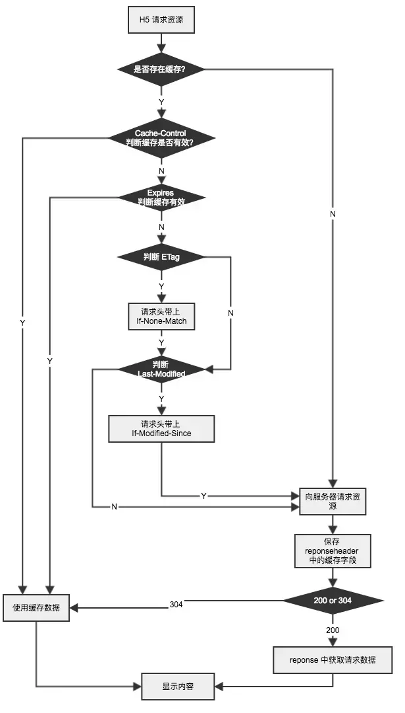
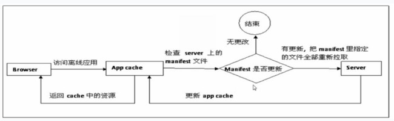
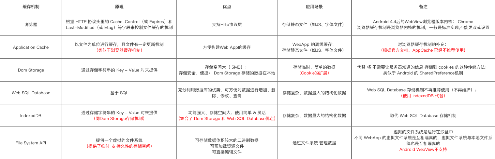
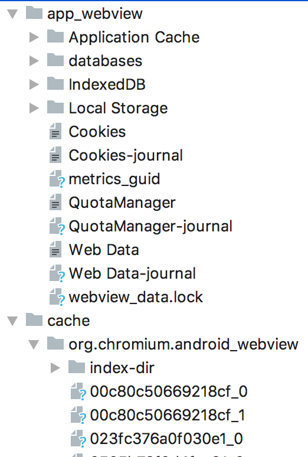

Webview自带的缓存机制主要有以下几种:
浏览器缓存
APPlication Cache
Dom Storage
Web Sql Database
Indexed Database
File System
第一种：浏览器缓存机制
这个协议主要是前端同学设置，原理是：
根据 HTTP 协议头里的 Cache-Control （或 Expires）和 Last-Modified（或 Etag）等字段来控制客户端浏览器的文件缓存机制
-
Cache-Control ：用于控制文件在本地缓存有效时长
Cache-Control:max-age=600 表示文件在本地应该缓存，且有效时长是600秒（从发出请求算起）。在接下来600秒内，如果有请求这个资源，浏览器不会发出 HTTP 请求，而是直接使用本地缓存的文件
-
Expires ：与Cache-Control功能相同，即控制缓存的有效时间
Expires:Tue,12 Jun 2018 16:39:54 GMT Expires是 HTTP1.0 标准中的字段，Cache-Control 是 HTTP1.1 标准中新加的字段，当这两个字段同时出现时，Cache-Control 优先级较高
-
Last-Modified ：标识文件在服务器上的最新更新时间
Last-Modified:Tue,12 Jun 2018 16:39:54 GMT 这表示文件最后的修改时间 在下次请求的时候，如果这个时间已经超过了上面这个字段的时间，浏览器通过 If-Modified-Since 字段带上这个时间，发送给服务器，由服务器比较时间戳来判断文件是否有修改。如果没有修改，服务器返回304告诉浏览器继续使用缓存；如果有修改，则返回200，同时返回最新的文件。
-
Etag ：功能同Last-Modified ，即标识文件在服务器上的最新更新时间
ETag:"10df8c5f-110" Etag 取值是一个对文件进行标识的特征字串 在向服务器查询文件是否有更新时，浏览器通过If-None-Match 字段把特征字串发送给服务器，由服务器和文件最新特征字串进行匹配，来判断文件是否有更新：没有更新回包304，有更新回包200
归根结底就是用2个字段，一个用于控制缓存有效时间，一个用于在缓存失效后，向服务查询是否有更新。
特别注意：浏览器缓存机制是浏览器内核的机制，一般都是标准的实现

第二种：APPlication Cache
- 以文件为单位进行缓存，且文件有一定更新机制（是对浏览器缓存机制的补充, 原理相似）
- 是一个专门为Web App离线使用的缓存机制
- AppCache 的缓存文件与浏览器的缓存文件是分开存储的，因为 AppCache 在本地有5MB的空间限制
前端在文档的 html 标记中添加 manifest 属性指定配置文件:
<!--https://域名/cache.manifest-->
<html manifest="/cache.manifest">
...
</html>
一个典型的manifest文件格式，包含三部分配置：
CACHE MANIFEST - 在此标题下列出的文件将在首次下载后进行缓存
NETWORK - 在此标题下列出的文件需要与服务器的连接，且不会被缓存
FALLBACK - 在此标题下列出的文件规定当页面无法访问时的回退页面（比如 404 页面）
格式举例：
CACHE MANIFEST
## 注释：需要缓存的文件，无论在线与否，均从缓存里读取
CACHE:
chched.js
cached.css
# 注释：不缓存的文件，无论缓存中存在与否，均从新获取
NETWORK:
uncached.js
uncached.css
# 注释：获取不到资源时的备选路径，如index.html访问失败，则返回404页面
FALLBACK:
index.html 404.html

android客户端AppCache缓存目录设置：
//设置缓存目录
mSetting.setAppCachePath(getCacheDir().getAbsolutePath());
//设置是否启用缓存
mSetting.setAppCacheEnabled(true);
//设置缓存大小
mSetting.setAppCacheMaxSize(20*1024*1024);
第三种 Dom Storage
通过存储字符串的 Key - Value 对来提供，该存储机制和服务器没有交互，类似于 Android 的 SharedPreference 存储机制，适合存储临时、简单的数据。提供 5MB（分 HOST)的存储空间。
- DOM Storage 分为 sessionStorage & localStorage； 二者使用方法基本相同，区别在于作用范围不同：
- sessionStorage：具备临时性，即存储与页面相关的数据，它在页面关闭后无法使用
- localStorage：具备持久性，即保存的数据在页面关闭后下次还可以使用
android客户端DOM Storage设置：
// 开启DOM storage
mSetting.setDomStorageEnabled(true);
第四种 Web Sql Database
原理是基于SQL的数据库存储一些结构性的数据，可以方便对数据进行增删改查，现在主流浏览器 SQL Database 的实现都是基于 SQLite，但这种方式官方已经不推荐使用了，Android webview似乎也不再支持，后续版本不再维护，取而代之的是IndexedDB缓存机制。
android客户端Sql Database设置：
mSetting.setDatabaseEnabled(true);
String dbPath = getDir("db", Context.MODE_PRIVATE).getPath();
mSetting.setDatabasePath(dbPath);
第五种 Indexed Database
是一种NoSql数据库，也使用key-value的存储方式，相比于dom功能更强大，可以通过数据库的事务机制进行数据操作，支持index(索引)快速查询；存储空间更大，默认推荐250M，比dom的5M大的多了，比较适合复杂，大量的结构化数据存储
Android 4.4 引入 IndexDB 支持，在客户端上只用设置允许js，就自动打开了这种缓存机制
mSetting.setJavaScriptEnabled(true);
第六种 File System
这种机制是H5新加入的存储机制，原理为H5页面的数据 提供一个虚拟的文件系统，目前Android Webview暂时不支持
- 可进行文件的创建、读、写、删除、遍历等操作，就像 Native App 访问本地文件系统一样
- 虚拟的文件系统是运行在沙盒中
- 不同 WebApp 的虚拟文件系统是互相隔离的，虚拟文件系统与本地文件系统也是互相隔离的

android WebView缓存策略配置：
LOAD_CACHE_ONLY：不使用网络，只读取本地缓存数据
LOAD_DEFAULT：（默认）根据cache-control决定是否从网络上取数据
LOAD_NO_CACHE：不使用缓存，只从网络获取数据
LOAD_CACHE_ELSE_NETWORK：只要本地有，无论是否过期，都使用缓存中的数据，本地没有缓存时才从网络获取
//设置缓存策略
mSetting.setCacheMode(WebSettings.LOAD_DEFAULT);
android webView缓存路径：

android webView缓存的清理：
/**
* Clears the storage currently being used by both the Application Cache and
* Web SQL Database APIs by the given origin. The origin is specified using
* its string representation.
*/
public void deleteOrigin(String origin) {
// Must be a no-op for backward compatibility: see the hidden constructor for reason.
}
/**
* Clears all storage currently being used by the JavaScript storage APIs.
* This includes the Application Cache, Web SQL Database and the HTML5 Web
* Storage APIs.
*/
public void deleteAllData() {
// Must be a no-op for backward compatibility: see the hidden constructor for reason.
}